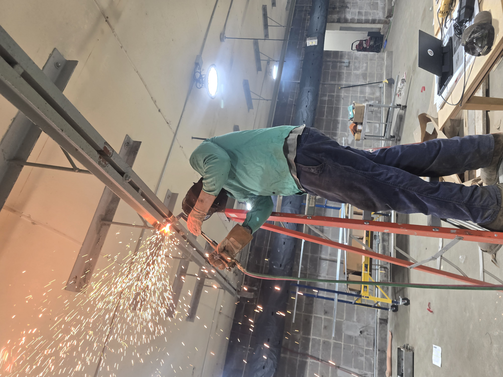
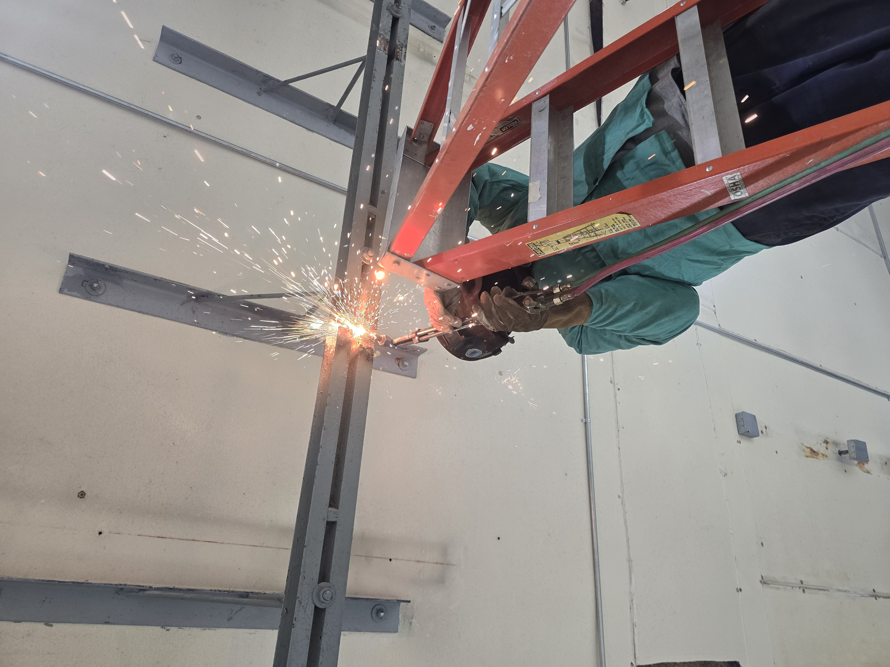
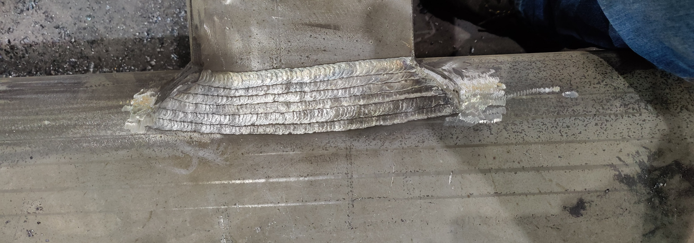
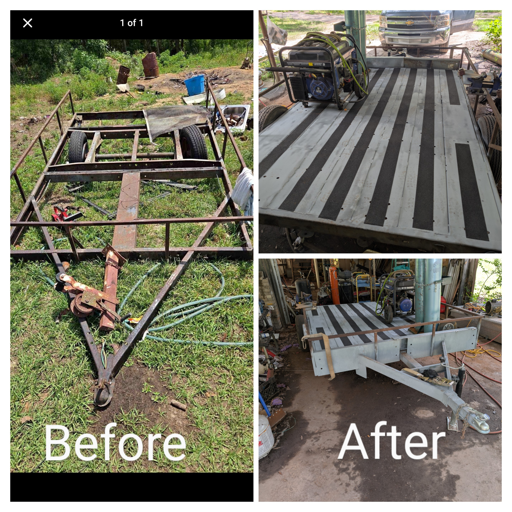

Industrial Capability
Precision-built support for demanding commercial and structural projects.
We deliver disciplined execution for General Contractors and B2B clients who need a dependable partner for heavy fabrication, controlled teardown, and high-integrity repair work.
Structural Teardown & Industrial Demolition
Controlled dismantling, precision cutting, and efficient structural removal.




Our team executes safe, controlled overhead structural steel teardowns, precision torch cutting, custom rigging, and commercial space remodeling with strict site safety protocols and hyper-efficient structural dismantling practices.
Certified Weld Quality Showcase
Multi-process weld capability built for structural integrity and inspection readiness.



We deliver precision with Pulse MIG, Dual Shield Flux Core, and Solid Core MIG processes. Our Navy-grade defense manufacturing background from various maritime training and production facilities along the gulf coast means every bead is laid with flawless consistency and built to pass strict X-ray and structural inspection standards.
Commercial Equipment & Mobile Trailer Repair
Heavy-duty repairs and custom fabrication with efficient resourcefulness.

We provide heavy utility trailer rebuilds, commercial equipment repairs, and custom attachment fabrication designed for durability and cost control.
Our approach includes full structural restorations engineered cleanly with salvaged industrial components to meet hyper-efficient budgets without sacrificing quality.
Contact Directory
Direct access for procurement, fabrication, and operations support.
Business & Contracting
For GCs, B2B clients, or procurement officers seeking quotes and bidding services.
procurement@qfwllc.comCustom Fabrication & Public Services
For custom fab builds, private restorations, or services for non-business public entities.
sales@qfwllc.com